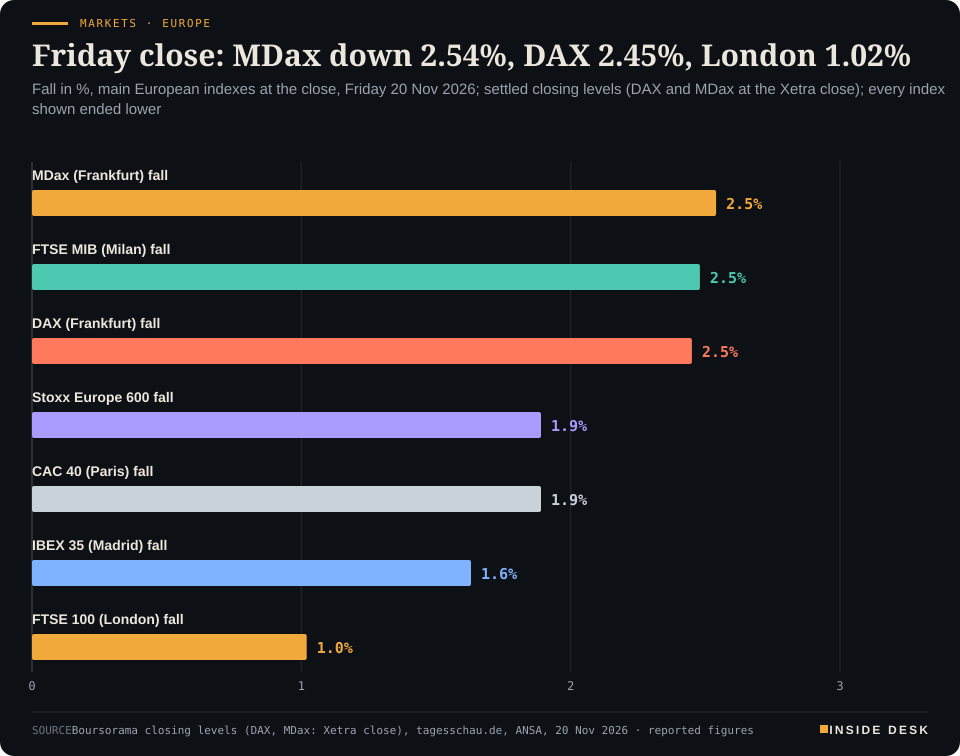
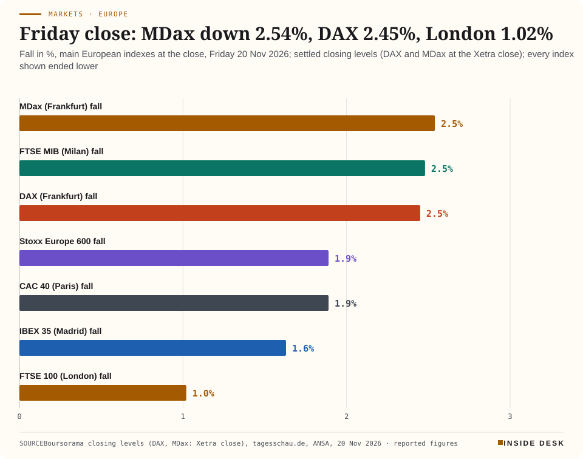

Inside Desk ePaper, Evening ePaper · Fri 20 Nov 2026
Friday, 20 November 2026Always free
Inside Desk
Evening ePaperPublished 18:31 CET · Berlin
Lead · Tech & Compute
The licence files a House committee released on Thursday are duller than a share price and more useful. They show a process, a queue and a ledger, not a flood.
This evening's edition: Washington's list of AI-chip licences for China met a Friday chip sell-off, the DAX closed 7.1% down on the week, and Nagel spoke of a third hike. Also: Lagarde's last Frankfurt speech, Ukraine's strike on a Druzhba hub, buy-now-pay-later becomes credit, Britain's first hard frost, and a Podium vs Print on who takes the first losses.
A congressional committee published how many AI chips Washington had approved for China, chip shares paid for the list, and the Bundesbank's president said of rates: "I believe we have to do something."
Geo-economics · p. 6
Markets & Macro · p. 8
Energy & Industry · p. 12
Climate & Weather · p. 18
The day in one sentenceA congressional committee published how many AI chips Washington had approved for China, chip shares paid for the list, and the Bundesbank's president said of rates: "I believe we have to do something."
ContentsInside Desk · Evening ePaper20 November 2026
This evening's edition: Washington's list of AI-chip licences for China met a Friday chip sell-off, the DAX closed 7.1% down on the week, and Nagel spoke of a third hike. Also: Lagarde's last Frankfurt speech, Ukraine's strike on a Druzhba hub, buy-now-pay-later becomes credit, Britain's first hard frost, and a Podium vs Print on who takes the first losses.
11 edition pieces · 11 desks · Published 18:31 CET, 20 November 2026
22 ePaper extras, added , 20 November. They appear only in the ePaper and carry their own time.
18:30 Evening ePaper, updated live until 22:30 with an “Updated” time and a Latest page
Sun 10:00 The Sunday Magazine
Berlin time. Every issue is free.
How to read it
Swipe, use the arrow keys or the page strip. Tap any headline for the reading view. Press / to search, t for contents, +/− to zoom. Download the PDF.
LatestInside Desk · Evening ePaper20 November 2026
Latest
Live: this page and the issue are updated until 22:30 Berlin time.
Evening ePaper published. No updates yet.
LeadInside Desk · Evening ePaper20 November 2026
Tech & Compute · Lead · 3 min
The licence files a House committee released on Thursday are duller than a share price and more useful. They show a process, a queue and a ledger, not a flood.
On a day when chip shares fell hard again on both sides of the Atlantic, the most informative document in technology was not a price. It was a spreadsheet of export licences, released on Thursday afternoon in Washington by the chairman of the House Foreign Affairs Committee, Brian Mast, under his powers in the Export Control Reform Act1. Mast called it “the most detailed public disclosure in the history of the Export Control Reform Act”1. It deserves to be read before the tape, because it answers a question the tape cannot: how much of the China story is paper, and how much is silicon.
The numbers in the file. Between December 2025 and May 2026, companies applied to ship more than 3.4 million AI chips to China, including Nvidia’s H200 and AMD’s MI325X3. The Commerce Department’s Bureau of Industry and Security approved more than 879,000 of them1,2. Four of the buyers sit on the Pentagon’s list of Chinese military companies: Tencent with 150,000 chips, Alibaba with 75,000, Baidu with 43,000 and BYD with 4,000; together they account for more than 30% of the approvals3. Mast also said two firms named in Nvidia’s applications, Maginfra and New Matrix, were suspected “smuggling fronts”, and called them “fake companies”2. DIGITIMES reported on Friday that ByteDance and Alibaba sought approval to send more than 1.1 million Nvidia AI chips to data centres in Malaysia, Indonesia and Thailand6.
What the file does not say. An approval is not a shipment. How many of the licensed chips reached China is not known; a Commerce official told the committee in July there had been “very few” shipments3. Nvidia said it sold $2.4 billion of licensed Hopper chips, the family that includes the H200, to China in its latest quarter3, and that China and Hong Kong customers made up about 9.5% of all revenue2. Its spokesperson said approvals were “subject to strict conditions and limited volumes” and that “despite receiving some licenses, we have since stopped shipping H200s to China”2. AMD said it “complies with applicable U.S. export control laws and regulations”2.
The contrarian reading. Bernstein’s Stacy Rasgon, asked by CNBC, did the arithmetic out loud: 879,000 of 3.4 million is “about one out of every four”, “not that many”, and in the context of the market “a rounding error. It’s tiny”2. That is the part the sell-off skips. The file describes a queue in which three in four requests did not get through, with sales further limited because Beijing did not approve large-scale imports, according to the analyst Patrick Moorhead2. The scandal is real; the volumes are modest. Both things can be true, and only one of them is in the share price.
LeadInside Desk · Evening ePaper20 November 2026
The tape, for the record. Nvidia traded at $137.50 at 11:11 New York time (17:11 CET), down 5.8% on the day and about 14% on the week, on course for a seventh straight weekly loss, its longest such run since 20084. At roughly $3.3 trillion it is now worth less than Alphabet at about $3.4 trillion4. AMD was down 9.1%, Broadcom 8.7% and the Philadelphia semiconductor index 6.6% at that point4. In Europe, ANSA’s 17:09 CET snapshot had ASML down 9.56%, Aixtron 9.35%, STMicroelectronics 9.3% and Soitec 11.29%, with the cable maker Prysmian, which supplies server and data-centre gear, down 6.29%5. That last one is the industrial side of the story: the people who sell copper and switchgear to data centres are being repriced alongside the people who sell the chips.
Where this leaves the calm reader. The licence file is now public, the hearings are dated, and the rules changed this week: on Monday Commerce issued an interim final rule closing the loophole that let Chinese companies rent Nvidia computing power from data centres in third countries2. That is a lot of paperwork, which is good news of a kind: it can be checked. What it cannot yet tell you is whether next quarter’s invoices from Malaysia or Thailand will look different. Those numbers arrive with earnings, not with Friday afternoons.
Nothing here is investment advice.
Geo-economicsInside Desk · Evening ePaper20 November 2026
Geo-economics · Podium vs Print · 2 min
Lagarde wants the EU budget to absorb the first losses on chip plants and data centres. The estimate she cited shows how big the hole is that she wants it to stand in front of.
Podium
“In technology, where projects such as chip plants and data centres need European scale, it means public-private partnerships at European level, with public money, including from the EU budget, taking the first losses and drawing in private capital.”
Christine Lagarde, President of the European Central Bank, Keynote at the 36th Frankfurt European Banking Congress, Friday 20 November 2026
Print€1.3 trillion
One recent estimate suggests that raising Europe's share of the world's AI computing capacity from around 5% to 15% by 2030 would require investment of around €1.3 trillion.
KIRA Center, A Transformative AI Strategy for Europe (September 2026), as cited in the speech's footnote 1, Friday 20 November 2026
The podium. In her eighth and last keynote at the Frankfurt European Banking Congress as ECB president, Christine Lagarde turned from money to machines1. Where a challenge needs a European answer, she said, Europe should strengthen the institutions that can give it; in technology, that means European public-private partnerships, “with public money, including from the EU budget, taking the first losses and drawing in private capital”1. Lagarde steps down in February, CNBC noted2.
The print. Her own speech carries the bill. Citing a September study by the KIRA Center, she said one recent estimate puts the investment needed to lift Europe’s share of the world’s AI computing capacity from around 5% to 15% by 2030 at around €1.3 trillion1. She was frank about why that money is not flowing: “as long as we can buy computing power from foreign providers and frontier AI models remain available to us, the case for paying that price is hard to make”1.
The gap. The two lines describe different animals. A first-loss tranche is a cushion: public money takes the first hit so private investors will put up the rest. It works when the project is roughly sound and the risk is the unknown. €1.3 trillion over about four years to triple a market share is not a cushion problem; it is a demand problem. Europe’s buyers can still rent compute from abroad, and Lagarde’s own words say that is why they do1. A guarantee changes who loses if a data centre stands empty. It does not fill it. …
Geo-economics · Short item · ePaper extra, added
Lagarde and Nagel both talked about defence on Friday. One wants more of it spent on R&D, the other asks why Europe should not finance it together.
Two central bankers spent part of Friday at the Frankfurt European Banking Congress talking about tanks, or rather about how to pay for them.
ECB president Christine Lagarde gave the numbers. EU countries spent around €420 billion on defence last year, a fifth more than the year before, and are set to spend over €450 billion this year, she said, citing the European Defence Agency1. Her point was what the money buys. Europe spends ten times less on defence research and development than the United States, relative to the size of its economy, and recent ECB analysis suggests each additional euro of public R&D spending can generate almost €2.50 of GDP over the long term1. …
Geo-economicsInside Desk · Evening ePaper20 November 2026
Geo-economics · Brief · ePaper extra, added
The European Commission is considering changes to its trade Enforcement Regulation so that Brussels can respond faster to serious economic threats, as it develops a new instrument aimed mainly at China, POLITICO reported this week, citing three people familiar with the talks1. The work follows a Franco-German request in October for a “second strike” tool1. It would be part of a broader trade-defence package, with the formal proposal currently scheduled for 9 December1.
The design is about who pulls the trigger. A qualified majority of EU countries would be needed to block a decision to use the new tool, a far lower hurdle than for the Anti-Coercion Instrument, which needs a qualified majority to be triggered and has never been used1. The backdrop is the EU’s €1-billion-a-day trade deficit with China1. Bernd Lange, who chairs Parliament’s trade committee, cautioned that using the Enforcement Regulation without a WTO dispute behind it could be “a bit tricky”1. A weapon that is easier to fire is also easier to be accused of firing.
Markets & MacroInside Desk · Evening ePaper20 November 2026
Markets & Macro · 2 min
The afternoon added little new information and a lot of new prices. Underneath, bonds were bought, staples were bought, and chips were sold to whoever would take them.
Europe closed where it had been heading all day, only further. At the Xetra close the DAX was down 2.45% at 24,839.65 points and the MDax 2.54% at 28,756.579,10,11. Milan’s FTSE MIB lost 2.48% to 48,703.7212, Paris’s CAC 40 1.89% to 7,927.75, closing on its low of the day13, Madrid’s IBEX 35 1.63% and London’s FTSE 100 a more cautious 1.02% at 10,346.349,15. The broad Stoxx Europe 600 ended 1.89% lower at 626.3414. Every main index finished in the red.
Markets · EuropeFriday close: MDax down 2.54%, DAX 2.45%, London 1.02%Fall in %, main European indexes at the close, Friday 20 Nov 2026; settled closing levels (DAX and MDax at the Xetra close); every index shown ended lower


Bar chart of falls on the main European stock indexes at the close on Friday 20 November 2026, all lower on the day: Frankfurt's MDax down 2.54 percent to 28,756.57, Milan's FTSE MIB down 2.48 percent to 48,703.72, the DAX down 2.45 percent to 24,839.65 at the Xetra close, the Stoxx Europe 600 down 1.89 percent to 626.34, Paris's CAC 40 down 1.89 percent to 7,927.75, Madrid's IBEX 35 down 1.63 percent to 18,873.10 and London's FTSE 100 down 1.02 percent to 10,346.34. These are settled closing levels.
Markets & Macro · Short item · ePaper extra, added
Paying suppliers late and asking customers to pay early is legal. Doing it just before the books close is what the Financial Times says the payments group did.
Shares in Worldline, the French payments group, fell 14% in Paris on Friday afternoon after the Financial Times reported on how the company presented its cash position, according to Investir1. The report says Worldline regularly delayed payments to its suppliers and asked clients for advances ahead of its financial publications, at least between 2021 and 20231.
The figure that matters is in a PwC report prepared at the end of 2023, which, according to the account, put the effect of these practices at €200 million on a free cash flow reported at €520 million1. That is not a rounding difference: on those numbers, close to two-fifths of the headline would have come from timing rather than from business.
Investir is careful to note that such shifts can be legal and can flatter figures at a given moment without reflecting a lasting improvement in activity1. Worldline rejects the reading and says its accounts are “prepared in accordance with all applicable rules and are not affected by any irregularity” (translated)1.
For readers, the lesson is general rather than about one company. Free cash flow is often treated as the honest number, the one that cannot be adjusted the way earnings can. It can. A payments business sits between merchants and their banks, so the timing of what it owes and what it is owed is the business itself; that makes the end-of-quarter calendar worth reading as closely as the total.
The sell-off came on a day when Paris was already lower: Investir had the CAC 40 down 1.2% and below 8,000 points in the afternoon, on course for its worst week since early March1.
Nothing here is investment advice.
Markets & MacroInside Desk · Evening ePaper20 November 2026
Markets & Macro · Brief · ePaper extra, added
Ubisoft lost 20% after reporting half-year sales down 18% and forecasting lower net bookings for the holiday quarter, when Take-Two’s “GTA VI” will compete for the same players1. The group kept its annual targets, which some analysts say pushes more of the effort into the fourth quarter; others point to balance-sheet risk from heavy cash burn1. The steel-tube maker Vallourec fell 12% after a lower quarterly gross operating profit and a year-end outlook below market expectations, and the caterer Elior 5.8% on a margin outlook Citi reads as about 3% under consensus1. On a day of sector-wide selling, these were company-specific prices.
Nothing here is investment advice.
Politics & InstitutionsInside Desk · Evening ePaper20 November 2026
Politics & Institutions · 2 min
The new Bundesrat president opened Friday's plenary with a defence of federalism and a warning about single Land elections. Then the chamber did what he praised: 20 Bundestag laws passed in one sitting.
North Rhine-Westphalia’s minister-president Hendrik Wüst opened his term as president of the Bundesrat on Friday with a speech whose key sentence was deliberately unglamorous: “The compromise is the craft of democracy. It is not brilliant, but it holds”1. He described the chamber as an exception in polarised times: “Here it is not the loud, the outraged that counts”1.
The sentence aimed beyond the room was about elections. “A single Land election must not and will not fundamentally change the Bundesrat or weaken its basic strength,” Wüst said, calling the chamber “the strong organ of a defensive and lively democracy”1. He tied this to history, recalling that the National Socialists’ first aim was the “Gleichschaltung” of the Länder, and concluded: “Whoever weakens our federalism weakens our democracy”1.
He did not skip the mood in the country. “We all see it: life is getting more expensive. Too many people are worrying about their jobs again,” he said, before listing reasons for confidence and ending that passage with “Kopf hoch, Deutschland!”1. His practical test for trust was modest: people “don’t expect miracles. They expect things in our country simply to work”, and politics should speak “a language that people understand”1. The NRW presidency’s motto is “Gemeinsam verbunden”1.
Then came the workload. After the speech and a minute’s silence for Hubert Aiwanger, the late chair of the economics committee, the chamber dealt with 72 further agenda items, and 20 laws passed by the Bundestag cleared it2. Among them were the digital wallet law, the emergency-care reform, the first step of the driving-licence reform and expanded psychosocial support for victims of violent and sexual crimes2. Only one law, on children’s start chances, was sent to the mediation committee2.
Politics & Institutions · Short item · ePaper extra, added
Bavaria, Saarland and Schleswig-Holstein asked the Bundesrat to make self-employed teaching legally safe again, before social-insurance bills arrive.
Bavaria, Saarland and Schleswig-Holstein presented a motion in Friday’s Bundesrat plenary asking for the use of self-employed teachers to be made “legally reliable and practicable”1. Schools, universities, adult-education centres, music schools and cultural institutions depend on them, the three Länder argue1.
The trigger is a stricter reading of the rules by the Federal Social Court and the umbrella organisations of the social-insurance funds1. Under it, almost all existing freelance teaching risks being classified as dependent employment and charged with social contributions1. The Länder say the institutions cannot carry those extra costs, and that teachers who are employed instead usually end up with lower net pay1.
The Bundesrat on Friday adopted a resolution from Saxony and Thuringia calling for mopeds and other light vehicles to be allowed 60 km/h1. Today’s 45 km/h is not a traffic-law limit but a design speed tied to an EU vehicle classification in force since the 1990s; faster vehicles in those classes simply get no type approval1.
The Länder argue that brakes, tyres, chassis and lights have improved, and that a faster moped would be a cheap option for longer trips in rural areas with thin public transport1. Their evidence from the road: certain small motorcycles from the former GDR are still allowed 60 km/h1. Because the rule is European, Berlin is asked to push for changes to classes L1e-B, L2e and L6e and to the licence rules1. The government must consider the resolution but is free to ignore it1.
Psychology & BehaviourInside Desk · Evening ePaper20 November 2026
Psychology & Behaviour · 2 min
An Oxford survey of 5,437 teenagers finds body-focused repetitive habits are the norm. The finding that matters is the minority for whom they hurt, and what travels with that hurt.
A cross-sectional study in BMJ Mental Health, drawn from the 2025 OxWell Student Survey, asked 5,437 adolescents aged 11 to 18 about hair pulling, skin picking and nail biting1. The headline is reassuring: 58.5% reported at least one such body-focused repetitive behaviour, so it is ordinary, not exotic1. Nail biting was most common at 43.6%, followed by skin picking at 31.3% and hair pulling at 14.5%1. The habits travel together: 84% of hair-pullers and 76% of skin-pickers reported at least one other1.
The annex is in the distress. Among those with the behaviours, 22.2% reported moderate-to-high distress, and 3.3% of the whole sample reported the highest level1. The authors’ plain summary: around one in ten adolescents reported distressing behaviours1. Those were more common in girls and in trans and gender-diverse young people than in boys1.
What travels with it is the figure to sit with. Distressing behaviours were reported by 6.3% of teenagers whose internalising symptoms were in the normal range, against 34.2% of those in the clinical range1. Among teenagers who were never bullied the share was 9.6%; among those bullied more than weekly it was 27.1%1. In the adjusted analysis, internalising symptoms were the strongest predictor, with an odds ratio of 1.97 per 10-point increase, while gender and frequent bullying stayed independently linked1. A gap between neurodivergent (20%) and neurotypical (10%) teenagers disappeared after adjustment1.
The study is a snapshot, so it cannot say whether the picking follows the anxiety or the bullying, or the other way round1. Its clinical point is modest and useful: “Assessing distress, rather than behaviour alone, may improve identification of adolescents with unmet clinical need”1.
For you. If a teenager at home bites or picks, the habit alone is common and usually harmless. The useful question is not “why do you do that?” but “does it bother you?”, and if the answer is yes, whether something else is weighing on them too.
Psychology & Behaviour · Short item · ePaper extra, added
A national cohort study links less frequent exercise to more depression and anxiety a year later. Frequency held up better than intensity or duration.
Researchers led by Michael Grasdalsmoen of Western Norway University of Applied Sciences followed 10,460 full-time students aged 18 to 35, as published in PLOS One1. At the start, the students described how often, how hard and how long they exercised; a year later they completed a self-administered diagnostic assessment for common mental disorders1.
Students who reported less physical activity were more likely to meet criteria for anxiety or depression a year later1. But the dimensions did not weigh the same. Frequency was the most consistent factor, more reliably linked to later mental health than intensity or time spent1. There were sex differences: among women, lower intensity went with higher risk; among men, fewer total weekly hours did1. …
The Bundesrat on Friday cleared a law on psychosocial support for victims of violent and sexual crimes through criminal proceedings1,2. Children, adolescents and people with disabilities who are victims of serious crimes are to receive this support automatically, without having to apply1. Adult victims of a serious crime get a right to free support without first proving they are especially vulnerable, and victims of domestic violence get both free psychosocial support and free legal representation1. Police, prosecutors and courts must tell victims the support exists, and pay for the companions rises1.
Psychosocial trial support is non-legal: information and steadiness through a criminal case, with help on understanding the proceedings1. Since 2017 only minors and particularly vulnerable adults had a claim1. Removing the paperwork matters most for people least able to fill it in.
Energy & IndustryInside Desk · Evening ePaper20 November 2026
Energy & Industry · 2 min
Saturday's day-ahead price is the lowest since Wednesday. The discount is real, it is in the middle of the day, and it is not in your contract.
Saturday’s power is settled, and it is cheaper. For delivery on Saturday 21 November, the German-Luxembourg day-ahead auction averages €187.88 per megawatt hour, according to Fraunhofer ISE’s Energy-Charts, which republishes the Federal Network Agency’s market data1. That is 12.4% below Friday’s €214.51 and the lowest daily average since Wednesday’s €146.251,2.
The discount sits in the middle of the day. The cheapest hour is 13:00 to 14:00, averaging €147.70, and the six hours from 10:00 to 16:00 average €166.471. Then the evening returns: 18:00 to 19:00 averages €230.73, and the dearest quarter-hour, at 18:00, clears at €232.191. Desk arithmetic: the gap between Saturday’s cheapest and dearest quarter-hour is €87.49, a little narrower than Friday’s €94.001.
Energy & Industry · Short item · ePaper extra, added
The Dutch benchmark rose for a second day running. On the week it is still a little cheaper, which is the less dramatic and more useful fact.
Europe’s gas benchmark ended the working week going up. The Dutch TTF contract for December delivery stood at €88.52 per megawatt hour in Friday’s intraday trading, up €4.06 or 4.8% from Thursday’s €84.461. At 15:40 it had been at €87.32, Teleborsa reported2. The price becomes final only at the London close, so Friday’s figure may still move1.
The two-day rise follows a sharp dip. On Wednesday the contract fell 5.3% to €80.85, its lowest close of the month on the series, and on Monday it had already dropped 6.8% to €84.751. Desk arithmetic: from Wednesday’s low to Friday’s intraday price is a rise of 9.5% in two sessions1.
Put the week together and the drama shrinks. Friday’s €88.52 is 2.7% below the €90.95 of Friday 13 November and below the €94.86 of Monday 2 November1. Over the past twelve months the series has ranged between €78.08 and €103.94; Friday sits above 63% of those prices1.
That is the sober reading: gas is not spiking, it is swinging, by 5% to 7% a day, inside a range that is high by pre-crisis standards. Swings matter for power, because gas plants often set Germany’s evening electricity price. They matter less for households on fixed contracts, and more for anyone whose tariff is re-priced each month. Nothing here is investment advice.
Energy & Industry · Brief · ePaper extra, added
Bundesbank president Joachim Nagel used banking language for energy at the Frankfurt European Banking Congress on Friday. Europe’s dependence on external suppliers remains a vulnerability and energy is too expensive, he said, Econostream reported1. “So, the portfolio has still in my interpretation concentration risk on fossil fuels,” he said1.
He welcomed the German government’s decision to cut electricity taxation but said further action was needed: a more diversified energy portfolio, less fragmentation in grid infrastructure and more renewables1. He also pointed to an offsetting effect from the energy-tax decision on inflation early next year1.
A supervisor who found that kind of concentration in a bank’s loan book would ask for more capital or fewer exposures. Europe’s version of that is grids and storage, and neither is built in a quarter.
Money, FX & CommitteesInside Desk · Evening ePaper20 November 2026
Money, FX & Committees · 2 min
The Bundesbank president put euro-area inflation at 4% and Germany's at 3% on Friday, and said December's tightening would not hurt growth. That last claim is the one to test.
Joachim Nagel did not leave much room for doubt. Asked about the European Central Bank’s December meeting at the Frankfurt European Banking Congress on Friday, the Bundesbank president said: “I believe we have to do something”1,2. Reuters reported that he repeated his recent message that tightening was likely, with euro-zone inflation running at twice the ECB’s 2% target2.
The numbers he gave are blunt. Inflation is about 3% in Germany and 4% across the currency union, both too high, Nagel said, according to Econostream1. It could rise further at the beginning of next year, though he pointed to an offsetting effect from an energy-tax decision1. The ECB has already raised rates twice, bringing the relevant rate to 2.50%1. A further move, he said, would leave policy “slightly in the restricted territory”1.
Then the reassurance. Tightening “will not undermine” the economic forecast, Nagel argued, and returning inflation to 2% is a precondition for growth; medium-term inflation expectations remain well anchored1,2. He put German growth at roughly 1.3% this year and next, somewhat lower in 2028, and recalled that the IMF’s autumn meetings had, unusually, upgraded Germany’s outlook1.
Here is the contrarian reading. A rate rise that costs no growth would be a rare thing, and Nagel himself described four years of a “roller coaster” and could not exclude uncertainty rising to “even higher elevated levels”1. The December meeting brings new projections, including a first forecast for 20291. If those keep 1.3% while rates rise, the forecast is doing the persuading.
Money, FX & Committees · Short item · ePaper extra, added
EU governments agreed a position on supervising capital markets. The ECB president called it welcome, then explained why it falls short.
Christine Lagarde spoke at the Frankfurt European Banking Congress for the eighth and, she said, last time as ECB president on Friday1. The sharpest line was about a deal most savers have never heard of. “The Council has just agreed its position on strengthening the supervision of capital markets, which is welcome,” she said. “But the position weakens the European supervisor’s ability to take effective decisions and includes too many carve-outs”1.
Her argument is about slow losses. “Each year without it, more of our savings are invested abroad and more of our growing firms look elsewhere for funding. …
Money, FX & Committees · Brief · ePaper extra, added
The greatest immediate challenge for finance may be cyber threats supercharged by increasingly sophisticated AI agents, ECB president Christine Lagarde said at the Frankfurt European Banking Congress on Friday, Reuters reported1. “The one (worry) that keeps me awake, and many of you awake as well … is AI applied together with cyber threat,” she said, adding that policymakers had not paid enough attention to it1.
Attackers are often anonymous and hard to track, she said, and rely on dubious funding, often from “toxic states” with an interest in disrupting the world1.
It is a telling choice for a central banker whose day job is inflation. A rate decision can be corrected at the next meeting. A bank that cannot open its systems on a Monday morning cannot be fixed by a forecast. For you, the practical version is old advice: two-factor log-ins, and no payment approvals over the phone.
Ordinary & Inherited LifeInside Desk · Evening ePaper20 November 2026
Ordinary & Inherited Life · 2 min
Germany's new consumer-credit rules took effect on Friday. Buy-now-pay-later, loans under €200 and zero-percent deals now come with affordability checks, clearer costs and a rate ceiling.
Since Friday, 20 November, Germany’s consumer-credit law covers payments that until now barely counted as credit1. It implements the new EU Consumer Credit Directive and applies to all consumer loans signed from today; older contracts generally stay under the old rules1. Newly covered are loans under €200, many “buy now, pay later” options at online checkouts, loans running less than three months and zero-percent financing for furniture or electronics1.
The checkout changes first. Lenders must now check whether you are likely to repay, using income, spending and your financial circumstances; a credit-bureau score alone is not enough, and social-media data and sensitive data such as health may not be used1. Online this runs in real time in the background: if the check says you cannot afford the instalments, the pay-later option is simply not shown, and you pay now, by card or in advance2. BaFin’s own examples of what now counts include concert tickets for €180 split into interest-free instalments, and clothes paid by a payment service with the debit pushed back ten weeks2. From today, pay-later credits also feed into credit scores, because bureaus receive the data through the checks2.
The classic invoice purchase usually stays outside, as long as the shop itself grants free deferral: up to 50 days for small and mid-sized firms, up to 14 days for large online retailers1,2.
Three new protections are worth knowing. If an automated check rejects you, you can demand an understandable explanation and a review by a person1. A loan is usually void if its annual percentage rate exceeds the usual market rate for comparable loans by 100% or by 12 percentage points, whichever comes first: at a 7% market rate the line is 14%, at 15% it is 27%1. And a loan can now be concluded without a signature, but a pre-ticked box is not enough1.
For you. Debt counsellors rate buy-now-pay-later as the most problematic credit product, according to a survey by the federation of consumer organisations1. The Verbraucherzentralen’s advice is dull and effective: write down every running instalment, including small ones with different providers, before adding a new one1. Not advice, just arithmetic.
Ordinary & Inherited Life · Short item · ePaper extra, added
The annual social-insurance thresholds rise with wages, and the health ceiling gets an extra €300 on top. Higher earners will see it on their January payslip.
The Bundesrat on Friday approved the regulation setting Germany’s social-insurance thresholds for 2027; it is due to take effect on 1 January1.
The contribution ceiling for pension insurance, the monthly pay above which no pension contributions are charged, rises from €8,450 to €8,8501. For statutory health and long-term-care insurance, the ceiling rises from €5,812.50 to €6,375 a month1. …
Ordinary & Inherited Life · Brief · ePaper extra, added
The new consumer-credit law also reaches the overdraft, the Dispo1. When granting one, banks must now check whether the customer could clear it, typically within 12 months1. If the bank cancels an overdraft, it must offer repayment in 12 equal monthly instalments at the existing interest rate1. An overdraft can now also be revoked, like other credit1.
For anyone who falls behind on any loan, lenders must in suitable cases offer reasonable concessions, such as a longer term, a payment pause or lower interest, before enforcement, and must point to debt-counselling services; there is no right to a particular solution1. A loan can be revoked within 14 days, by letter, email or an online “revoke contract” button, but not by phone1. Keep the confirmation.
Tech & ComputeInside Desk · Evening ePaper20 November 2026
The claim is about chip circuitry, not chatbots. It is also, for now, a claim made by the company selling the model.
OpenAI has published new details of its partnership with AMD: engineers used undisclosed AI models to help optimise the chipmaker’s upcoming flagship GPU and CPU designs1. The headline figure is an improvement of up to 14% in PPA (power, performance and area) for the GPU circuitry, with unspecified single-digit PPA gains on the processor1.
The work was done in SystemVerilog RTL, the language used to describe the circuits of high-end chips; OpenAI says its model found “further improvements by rewriting the code that describes the chip’s circuits”1. It claims the effort condensed a year’s worth of conventional design work into “under 5 months”, and that the model reasoned “at the level of an expert microarchitect”1.
Two cautions. First, these are OpenAI’s own figures about OpenAI’s own models, reported by Tom’s Hardware; there is no independent measurement yet, and the chips themselves have not shipped1. Second, PPA is a design-stage metric. Whether a 14% better circuit becomes a 14% better product depends on the foundry, the memory, the software and the price.
The timing is still worth noting. On the same Friday AMD’s shares were down 9.1% by 17:11 CET in a broad chip sell-off2. The market was marking down what chips will earn; this announcement is about how fast and cheaply they can be designed. Those are different questions, and only the second one has an engineering answer.
Tech & Compute · Brief · ePaper extra, added
JPMorgan cut Scout24, the operator of ImmobilienScout24, from “Overweight” to “Neutral” on Friday and lowered its price target from €101 to €841. The analyst Marcus Diebel wrote that his own test cases in property search showed agentic AI already offering convincing, sometimes much better functions, including going straight to estate agents’ websites (translated)1,2. He expects pressure first on high-margin advertising and in negotiations with agents, later possibly on listings and user traffic1. The shares fell more than 5% in early Xetra trading2. A forecast, not a fact yet; but it is the clearest description so far of how AI could hurt a business without anyone buying a single chip.
Health & CareInside Desk · Evening ePaper20 November 2026
Health & Care · 2 min
Four years before the 2030 deadline, ECDC's numbers show where the effort works, and where hospitals are losing ground to one bacterium.
The European Union set itself five antibiotic targets for 2030, all measured against 2019. This week, for European Antibiotic Awareness Day, the European Centre for Disease Prevention and Control published where the bloc stands, and the scorecard is lopsided: one target met, one close, three far off1.
The good line first. Bloodstream infections with meticillin-resistant Staphylococcus aureus, MRSA, are down 19% since 2019, against a target of minus 15%1. And the share of human antibiotic use coming from the World Health Organization’s first-line “Access” group rose from 61.1% to 62.5%, close to the 65% goal1. ECDC adds a caveat even to the success: MRSA infections have risen in the past two years, which “now threatens” that progress1.
Then the hard numbers. Total antibiotic consumption in humans was only 5% lower in 2025 than in 2019, against a target of minus 20%1. Bloodstream infections with third-generation cephalosporin-resistant E. coli rose 16.4%, where the target is minus 10%1. And carbapenem-resistant Klebsiella pneumoniae, a bacterium resistant to the antibiotics hospitals keep in reserve for severe infections, accounted for a 72% increase in bloodstream infections since 2019, against a target of minus 5%1. ECDC links it to high mortality and to spread inside healthcare facilities1.
The remedies ECDC lists are not glamorous: hand hygiene, protective equipment, isolating patients in time, cleaning, and behind that enough infection-control staff, laboratory diagnostics and isolation rooms1. Its 2026 campaign targets parents, because 90% of human antibiotic use happens in the community and outpatient sector, not in hospitals, and children are often exposed: colds, coughs and sore throats are mostly viral1.
“We are still behind with several of the EU’s 2030 targets,” said ECDC director Pamela Rendi-Wagner, pointing to faster genomic surveillance as the new tool for tracing how resistant clones spread1. The arithmetic of the scorecard is simple: the target that moved was the one hospitals could attack with routines. The ones that did not move depend on millions of prescriptions written one at a time.
Health & Care · Short item · ePaper extra, added
Updated early-trial data for daraxonrasib with chemotherapy were presented in Barcelona. The numbers are striking; the trial is small and open.
Pancreatic cancer that has spread is among the hardest diagnoses in medicine; most patients survive months, not years2. That is the background against which updated results for daraxonrasib, a daily pill that shuts off RAS mutations found in most pancreatic cancers, were presented at the EORTC-NCI-AACR symposium in Barcelona on Thursday1,2.
Health & Care · Brief · ePaper extra, added
Germany’s Federal Joint Committee (G-BA) on Friday updated the requirements for its disease-management programme for rheumatoid arthritis, the first scheduled revision, based on an IQWiG review of 16 evidence-based guidelines1. Glucocorticoids are to be tapered off within three months instead of six1. Coordinating doctors will check vaccination status at least once a year, record smoking status at every consultation, and recommend moderate endurance and strength training; special diets are out for lack of evidence1. Interstitial lung disease gets its own section1. The health ministry still has to review the decision; contracts then have a year to adapt1.
Security & OrderInside Desk · Evening ePaper20 November 2026
Security & Order · 2 min
Kyiv's General Staff confirmed a strike on the Kaleykino pumping station in Tatarstan. The target is not a refinery but the junction where Russian crude is mixed before it travels.
Ukraine’s General Staff confirmed on Friday that its forces struck the Kaleykino oil pumping station in Russia’s Tatarstan Republic on 19 November1. Three oil storage tanks at the Kaleykino-1 facility were hit: one caught fire and two were damaged1. Each holds 50,000 cubic metres of oil, which puts them among the largest tanks of their kind in Russia1.
The geography is the message. Kaleykino sits near the city of Almetyevsk, more than 1,000 kilometres from the Ukrainian front line1. It is not a refinery but a hub: the station receives and blends crude from different Russian regions before distributing it to refineries and to the Druzhba pipeline, which carries Russian oil to European markets1. A hit there touches the plumbing between oilfield and refinery rather than a single plant.
The General Staff also updated its account of a strike on the Ilsky refinery in Krasnodar Krai on 18 November: one 5,000-cubic-metre tank destroyed and eight others damaged, seven of the same size and one of 1,000 cubic metres, plus a pipeline section, five technical buildings and a warehouse1. The full extent of the damage is still being assessed1.
What the statement does not say matters as much. The extent to which the Kaleykino attack disrupted the station’s operations “remains unclear”1. The same station was targeted by Ukrainian drones in February 2026, when the strike reportedly caused a fire and disrupted oil transport1. Repeat visits suggest the target is judged worth the range, and that it was repaired in between.
The calm reading: tank counts are a claim of damage, not a measure of lost barrels. The number to wait for is flow through the Druzhba, which will show up in the delivery data of its customers long before it shows up in a communiqué.
Security & Order · Short item · ePaper extra, added
An analysis by the Ukrainian outlet Texty counts more than 630 drones over the capital in under three months, and longer routes for each one.
Russian drones flew a combined distance of more than 19,000 kilometres over Kyiv between 1 August and 20 October, nearly half the Earth’s circumference, according to an analysis by the Ukrainian investigative outlet Texty1. In the same period of 2025 the figure was 4,300 kilometres, so this year’s distance is more than four times larger1.
More than 630 drones were detected over the city, twice the number a year earlier1. Each one also stayed longer: the average distance flown inside the city limits rose from 17 kilometres in 2025 to 30.5 kilometres this year1. The analysis reconstructed flight paths from monitoring-channel reports and counted only the parts of each route inside Kyiv1.
The explanation offered is technical. …
Security & Order · Brief · ePaper extra, added
Austria’s Foreign Ministry said on Friday that Russia alone is responsible for damage to the Austrian embassy in Kyiv during Thursday’s attack1. Russia’s embassy in Austria had written on X that Moscow had repeatedly warned foreign nationals, including diplomats, about staying in Ukraine, and that “full responsibility” for any consequences “lies entirely with the Austrian side”1.
Vienna’s answer: “evacuation recommendations in no way absolve Russia of its obligations under international law,” and “responsibility for the consequences of Russian air strikes lies solely with the Russian aggressor”, a point made to the Russian ambassador when he was summoned1. A projectile struck directly in front of the building; no staff were hurt, and extra security was ordered1. The Dutch embassy was also damaged in the same attack1.
Climate & WeatherInside Desk · Evening ePaper20 November 2026
Climate & Weather · 2 min
A northerly brings the coldest night of the autumn; by Sunday an Atlantic front stalls over the southwest. Two weathers, one island, one weekend.
The coldest night of the British autumn so far was Thursday’s, and it is about to lose that title. The Met Office recorded -8.4°C at Tulloch Bridge in the Scottish Highlands overnight, with sub-zero readings in Northern Ireland, while the south stayed much milder1. Friday night is forecast to be colder still: around -8°C to -9°C in one or two Highland glens, and frost spreading south under clear skies1. Where snow is lying in rural Scotland, BBC Weather says it could reach -10°C3.
The cold came on a northerly wind carrying Arctic air, after the season’s first snow warning on Tuesday, when more than an inch fell in parts of northern England1,3. The UK Health Security Agency has a yellow cold health alert in force for the north-west, the north-east and Yorkshire and the Humber until 9am on Monday; yellow means a moderate likelihood that the weather increases demand on health services and the risk to vulnerable people1.
The weekend then splits the country in two. Saturday starts frosty almost everywhere, -1°C to -3°C even in some towns, then turns sunny and crisp2. But an Atlantic front reaches Cornwall on Saturday evening and runs into cold, dry air held in place by high pressure to the north2. The Met Office’s explanation is the useful part: the clash slows the front and strengthens it, so the rain gets heavier while barely moving2. Some 30–50 mm could fall in the wettest places such as Dartmoor on Sunday, more than 75 mm in a reasonable worst case, while the north stays dry and frosty at 7°C to 9°C2.
There were already 12 flood alerts in England on Friday after the wet spell1. And the weather showed up in the shop figures too: clothing and footwear stores reported 1.5% growth in sales volumes in the latest official retail data, which the Guardian links to more typical autumn weather after a warm September1. Cold is not only a forecast; it is a coat bought, a boiler switched on, and a ward that fills up.
Climate & Weather · Short item · ePaper extra, added
A wet spring in Spain did the work. Italy and Tunisia go the other way, and prices have already hit multi-year lows.
The world’s olive oil output could reach a record 3.7 million tonnes in the 2026/27 season, according to preliminary figures in the Food and Agriculture Organization’s latest food outlook, reported on Friday by the Spanish trade journal Mercacei1. Spain alone is expected to produce 1.6 million tonnes, 22.7% more than last season1.
The reason is weather, in both directions. Favourable temperatures and abundant rain between March and May helped flowering and fruit set in Spain1. …
Climate & Weather · Brief · ePaper extra, added
Overnight snow brought trees down in Jeongeup, North Jeolla Province, on Friday, with firefighters clearing roads1. The Korea Meteorological Administration expects 3 to 8 cm more in parts of North Jeolla through early Saturday, possibly at 1 to 3 cm an hour, enough for heavy snow advisories1. Saturday morning lows range from -8°C to 3°C, below seasonal averages: -5°C in Seoul and Incheon, -7°C in Chuncheon1. The KMA warns that rain and snow lying since Wednesday could freeze into ice, while dry-weather advisories in eastern Gangwon raise the risk of wildfires1. On Jeju Island, gusts of up to 70 km/h, and 90 km/h in the mountains, are expected through Saturday morning1.
Charts and dataInside Desk · Evening ePaper20 November 2026
Charts and data
Energy · PowerSaturday €187.88 a MWh, 12.4% below Friday's €214.51Germany/Luxembourg day-ahead price, daily average by delivery day, € per MWh; SMARD to Thu 19 Nov, Fri 20 and Sat 21 Nov via Energy-Charts (same Bundesnetzagentur data). Desk arithmetic: 1–21 Nov average €235.41, October €169.48
Line chart of the daily average German-Luxembourg day-ahead electricity price from 1 September to 21 November 2026, in euros per megawatt hour. Prices mostly ran between about €100 and €210 in September and October, climbed above €250 from late October, peaked at €351.48 on Tuesday 10 November, fell to €139.70 on Sunday 15 November, rose to €224.83 on Thursday 19 November and €214.51 on Friday 20 November, and stand at €187.88 for the latest delivery day, Saturday 21 November.
Source: Bundesnetzagentur | SMARD.de day-ahead DE-LU daily averages of quarter-hourly prices, delivery days 1 Sep to 19 Nov 2026, retrieved 20 Nov 2026, 17:34 CET; delivery days Fri 20 and Sat 21 Nov from Fraunhofer ISE Energy-Charts (data: Bundesnetzagentur | SMARD.de), retrieved 20 Nov 2026, 17:34 CET · CC BY 4.0 · CSV
Latest values
Series
Value
Date
Chart
Day-ahead DE-LU
187.88
21 Nov 2026
Saturday €187.88 a MWh, 12.4% below Friday's €214.51
Last data point of each series in the charts above, from the Inside Desk data archive. Sources under each chart.
Back pageInside Desk · Evening ePaper20 November 2026
Before you close the tab
The day in one sentence
A congressional committee published how many AI chips Washington had approved for China, chip shares paid for the list, and the Bundesbank's president said of rates: "I believe we have to do something."
One thing you can do this week
Before the first proper frost, walk once around your home with a pen: which radiator stays cold at the top, which window lets in a draught, where the stopcock is. Write the three answers on a card and pin it next to the fuse box. A cold night is easier when you already know where things are.
A habit, not advice.
What went right
Nobody had ever bred the stocky galaxias, one of Australia's most endangered alpine fish, in captivity. Researchers at Charles Sturt University did, and on Friday the university reported that the captive-bred fish are thriving in the wild 1. After the largest release so far, about 250 juveniles, recapture surveys found 10 healthy adults from an earlier release in the Snowy Mountains, where the species had been confined to two known wild populations 1. "To achieve a world first, then take those fish and put them back into the wild and see the wild population grow ... it's incredible," said Professor Lee Baumgartner 1.
In euros at home
The health ministry has set the average supplementary contribution rate in statutory health insurance at 2.9% for 2027, unchanged, and each fund sets its own rate 2. Desk arithmetic: on a €3,500 gross monthly salary, 2.9% is €101.50 a month; split evenly between employer and employee, that is €50.75 each, or €609 a year for the employee. Every 0.1 point a fund charges above or below the average moves an even half-share by €1.75 a month on that salary. Worth a look when your fund announces its 2027 rate.
Desk arithmetic on the cited figures.
Small words
Alternate bearing (vecería)
Olive trees tend to swing between a heavy crop one year and a light one the next. The FAO names this alternation, alongside heat, irregular rain and pests, as one reason olive harvests and prices jump so much from season to season 3. It is why one record year says little about the next.
Commentary for information only. Not investment, legal, tax, medical or political advice. Inside Desk is free and reader-supported. Every number is sourced in the piece it appears in.
This issue has been updated.
All articles in this edition
Tech & Compute · 3 min read
3.4 million asked, 879,000 approved: the paperwork under Friday's chip sell-off
The licence files a House committee released on Thursday are duller than a share price and more useful. They show a process, a queue and a ledger, not a flood.
On a day when chip shares fell hard again on both sides of the Atlantic, the most informative document in technology was not a price. It was a spreadsheet of export licences, released on Thursday afternoon in Washington by the chairman of the House Foreign Affairs Committee, Brian Mast, under his powers in the Export Control Reform Act1. Mast called it “the most detailed public disclosure in the history of the Export Control Reform Act”1. It deserves to be read before the tape, because it answers a question the tape cannot: how much of the China story is paper, and how much is silicon.
The numbers in the file. Between December 2025 and May 2026, companies applied to ship more than 3.4 million AI chips to China, including Nvidia’s H200 and AMD’s MI325X3. The Commerce Department’s Bureau of Industry and Security approved more than 879,000 of them1,2. Four of the buyers sit on the Pentagon’s list of Chinese military companies: Tencent with 150,000 chips, Alibaba with 75,000, Baidu with 43,000 and BYD with 4,000; together they account for more than 30% of the approvals3. Mast also said two firms named in Nvidia’s applications, Maginfra and New Matrix, were suspected “smuggling fronts”, and called them “fake companies”2. DIGITIMES reported on Friday that ByteDance and Alibaba sought approval to send more than 1.1 million Nvidia AI chips to data centres in Malaysia, Indonesia and Thailand6.
What the file does not say. An approval is not a shipment. How many of the licensed chips reached China is not known; a Commerce official told the committee in July there had been “very few” shipments3. Nvidia said it sold $2.4 billion of licensed Hopper chips, the family that includes the H200, to China in its latest quarter3, and that China and Hong Kong customers made up about 9.5% of all revenue2. Its spokesperson said approvals were “subject to strict conditions and limited volumes” and that “despite receiving some licenses, we have since stopped shipping H200s to China”2. AMD said it “complies with applicable U.S. export control laws and regulations”2.
The contrarian reading. Bernstein’s Stacy Rasgon, asked by CNBC, did the arithmetic out loud: 879,000 of 3.4 million is “about one out of every four”, “not that many”, and in the context of the market “a rounding error. It’s tiny”2. That is the part the sell-off skips. The file describes a queue in which three in four requests did not get through, with sales further limited because Beijing did not approve large-scale imports, according to the analyst Patrick Moorhead2. The scandal is real; the volumes are modest. Both things can be true, and only one of them is in the share price.
The tape, for the record. Nvidia traded at $137.50 at 11:11 New York time (17:11 CET), down 5.8% on the day and about 14% on the week, on course for a seventh straight weekly loss, its longest such run since 20084. At roughly $3.3 trillion it is now worth less than Alphabet at about $3.4 trillion4. AMD was down 9.1%, Broadcom 8.7% and the Philadelphia semiconductor index 6.6% at that point4. In Europe, ANSA’s 17:09 CET snapshot had ASML down 9.56%, Aixtron 9.35%, STMicroelectronics 9.3% and Soitec 11.29%, with the cable maker Prysmian, which supplies server and data-centre gear, down 6.29%5. That last one is the industrial side of the story: the people who sell copper and switchgear to data centres are being repriced alongside the people who sell the chips.
Where this leaves the calm reader. The licence file is now public, the hearings are dated, and the rules changed this week: on Monday Commerce issued an interim final rule closing the loophole that let Chinese companies rent Nvidia computing power from data centres in third countries2. That is a lot of paperwork, which is good news of a kind: it can be checked. What it cannot yet tell you is whether next quarter’s invoices from Malaysia or Thailand will look different. Those numbers arrive with earnings, not with Friday afternoons.
Nothing here is investment advice.
Desk comment A rumour moves a price in a minute. A licence file takes six months, and is still there afterwards.
Podium vs Print: "public money taking the first losses", and €1.3 trillion for ten more points of the world's compute
Lagarde wants the EU budget to absorb the first losses on chip plants and data centres. The estimate she cited shows how big the hole is that she wants it to stand in front of.
Podium
“In technology, where projects such as chip plants and data centres need European scale, it means public-private partnerships at European level, with public money, including from the EU budget, taking the first losses and drawing in private capital.”
Christine Lagarde, President of the European Central Bank, Keynote at the 36th Frankfurt European Banking Congress, Friday 20 November 2026
Print€1.3 trillion
One recent estimate suggests that raising Europe's share of the world's AI computing capacity from around 5% to 15% by 2030 would require investment of around €1.3 trillion.
KIRA Center, A Transformative AI Strategy for Europe (September 2026), as cited in the speech's footnote 1, Friday 20 November 2026
The podium. In her eighth and last keynote at the Frankfurt European Banking Congress as ECB president, Christine Lagarde turned from money to machines1. Where a challenge needs a European answer, she said, Europe should strengthen the institutions that can give it; in technology, that means European public-private partnerships, “with public money, including from the EU budget, taking the first losses and drawing in private capital”1. Lagarde steps down in February, CNBC noted2.
The print. Her own speech carries the bill. Citing a September study by the KIRA Center, she said one recent estimate puts the investment needed to lift Europe’s share of the world’s AI computing capacity from around 5% to 15% by 2030 at around €1.3 trillion1. She was frank about why that money is not flowing: “as long as we can buy computing power from foreign providers and frontier AI models remain available to us, the case for paying that price is hard to make”1.
The gap. The two lines describe different animals. A first-loss tranche is a cushion: public money takes the first hit so private investors will put up the rest. It works when the project is roughly sound and the risk is the unknown. €1.3 trillion over about four years to triple a market share is not a cushion problem; it is a demand problem. Europe’s buyers can still rent compute from abroad, and Lagarde’s own words say that is why they do1. A guarantee changes who loses if a data centre stands empty. It does not fill it. CNBC adds the political friction: data-centre projects are becoming more controversial, complex and costly, and opposition to them weighed with voters in the US midterms2.
For you. None of this reaches a household bill soon. But “EU budget taking the first losses” is a phrase to remember when the next long-term budget is negotiated: it is a liability, and it is shared.
Desk comment First loss is a polite word for the part nobody else will pay for.
€420 billion, then over €450 billion: Frankfurt's central bankers want defence money to buy research, and to be shared
Lagarde and Nagel both talked about defence on Friday. One wants more of it spent on R&D, the other asks why Europe should not finance it together.
Two central bankers spent part of Friday at the Frankfurt European Banking Congress talking about tanks, or rather about how to pay for them.
ECB president Christine Lagarde gave the numbers. EU countries spent around €420 billion on defence last year, a fifth more than the year before, and are set to spend over €450 billion this year, she said, citing the European Defence Agency1. Her point was what the money buys. Europe spends ten times less on defence research and development than the United States, relative to the size of its economy, and recent ECB analysis suggests each additional euro of public R&D spending can generate almost €2.50 of GDP over the long term1. Spent on research, defence money “can benefit the whole economy, whatever the security outlook,” she said1.
Bundesbank president Joachim Nagel went to the funding. “Defense, in my understanding, is a European public good,” he said, according to Econostream, and reiterated his support for considering joint European defence financing under conditions2. He stressed that this would not relieve member states of their obligations under the Stability and Growth Pact and should not simply add European spending on top of national budgets: “Why not financing defense together on the European level? Why not?”2
The two lines fit together more neatly than they first appear. Joint money is easier to defend when it buys something every member shares, and research is the most shareable thing in a defence budget. The harder question is the one neither answered on Friday: who decides which projects get it.
Appears only in the ePaper · Commentary for information only. Not advice.
Geo-economics · Brief · ePaper extra, added
Nineteen days to a "second strike": Brussels prepares a faster trade weapon aimed at China
The Commission is weighing a quicker retaliation tool, due in a trade-defence package on 9 December. The existing bazooka has never been fired.
The European Commission is considering changes to its trade Enforcement Regulation so that Brussels can respond faster to serious economic threats, as it develops a new instrument aimed mainly at China, POLITICO reported this week, citing three people familiar with the talks1. The work follows a Franco-German request in October for a “second strike” tool1. It would be part of a broader trade-defence package, with the formal proposal currently scheduled for 9 December1.
The design is about who pulls the trigger. A qualified majority of EU countries would be needed to block a decision to use the new tool, a far lower hurdle than for the Anti-Coercion Instrument, which needs a qualified majority to be triggered and has never been used1. The backdrop is the EU’s €1-billion-a-day trade deficit with China1. Bernd Lange, who chairs Parliament’s trade committee, cautioned that using the Enforcement Regulation without a WTO dispute behind it could be “a bit tricky”1. A weapon that is easier to fire is also easier to be accused of firing.
Appears only in the ePaper · Commentary for information only. Not advice.
Markets & Macro · 2 min read
Minus 2.45% at the Frankfurt close, minus 7% on the week, and the money went into Bunds
The afternoon added little new information and a lot of new prices. Underneath, bonds were bought, staples were bought, and chips were sold to whoever would take them.
Europe closed where it had been heading all day, only further. At the Xetra close the DAX was down 2.45% at 24,839.65 points and the MDax 2.54% at 28,756.579,10,11. Milan’s FTSE MIB lost 2.48% to 48,703.7212, Paris’s CAC 40 1.89% to 7,927.75, closing on its low of the day13, Madrid’s IBEX 35 1.63% and London’s FTSE 100 a more cautious 1.02% at 10,346.349,15. The broad Stoxx Europe 600 ended 1.89% lower at 626.3414. Every main index finished in the red.
Markets · EuropeFriday close: MDax down 2.54%, DAX 2.45%, London 1.02%Fall in %, main European indexes at the close, Friday 20 Nov 2026; settled closing levels (DAX and MDax at the Xetra close); every index shown ended lower
Bar chart of falls on the main European stock indexes at the close on Friday 20 November 2026, all lower on the day: Frankfurt's MDax down 2.54 percent to 28,756.57, Milan's FTSE MIB down 2.48 percent to 48,703.72, the DAX down 2.45 percent to 24,839.65 at the Xetra close, the Stoxx Europe 600 down 1.89 percent to 626.34, Paris's CAC 40 down 1.89 percent to 7,927.75, Madrid's IBEX 35 down 1.63 percent to 18,873.10 and London's FTSE 100 down 1.02 percent to 10,346.34. These are settled closing levels.
The week, in one subtraction. From last Friday’s close the DAX lost 7.1% and the MDax about 6.3% over the five sessions, the Stoxx 600 5.7% and the CAC 40 5.3%10,16,14,13; finanzen.net had counted 6.68% off the DAX for the week by 15:41 CET2. Reuters had flagged by mid-morning that a Stoxx 600 loss of more than 5% would be its worst week since the week ended 6 March3; Investir said the same of the CAC 404. The Stoxx 600 is still up 5.8% for the year at Friday’s close9, down from 6.2% in Reuters’ mid-morning count3. The year’s gains are smaller; they are not gone.
What was sold, and what was bought. The late selling was concentrated. ANSA’s late snapshot at 17:09 CET listed Soitec down 11.29%, ASML 9.56%, Aixtron 9.35% and STMicroelectronics 9.3%, with Prysmian, which makes cabling for servers and data centres, down 6.29%1. Banks followed, with Société Générale down 3.63% and BBVA 3%1. The money did not leave the building. It went into government bonds: the German ten-year yield fell 10.4 basis points to 3.3% and the Italian ten-year 8 points to 4.39%1. Gold, the usual shelter, was not one: it fell 3.98% to $3,586.9 an ounce1. Reuters had Nestlé, Unilever and British American Tobacco up more than 1% each in the morning3.
New York’s start. Wall Street opened lower but split. At the bell the Nasdaq Composite was down 1.20% at 23,592.67, the S&P 500 0.35% at 7,150.39 and the Dow 0.05% at 49,071.82, Reuters reported5. By 16:15 CET the 10-year Treasury yield had dropped almost seven basis points to 4.98%, and the University of Michigan’s November consumer sentiment index rose to 51.5, its highest since August, with one-year inflation expectations down to 3.7% from 4.7%6. ANSA’s 17:09 reading had the Dow up 0.35% and the Nasdaq down 2.3%1: old economy bid, new economy offered.
The plain reading. Friday also happens to be monthly options expiry in the US7, which tends to add volume rather than meaning. The meaningful part of the day is the bond move. When investors pay more for a ten-year Bund on a day with no new German data, they are telling you less about Germany than about their own nerves.
Nothing here is investment advice.
Desk comment A week of selling is a price. A week of buying bonds is an opinion.
Markets & Macro · Short item · ePaper extra, added
€200 million of €520 million: Worldline falls 14% on a report about how its cash flow was dressed
Paying suppliers late and asking customers to pay early is legal. Doing it just before the books close is what the Financial Times says the payments group did.
Shares in Worldline, the French payments group, fell 14% in Paris on Friday afternoon after the Financial Times reported on how the company presented its cash position, according to Investir1. The report says Worldline regularly delayed payments to its suppliers and asked clients for advances ahead of its financial publications, at least between 2021 and 20231.
The figure that matters is in a PwC report prepared at the end of 2023, which, according to the account, put the effect of these practices at €200 million on a free cash flow reported at €520 million1. That is not a rounding difference: on those numbers, close to two-fifths of the headline would have come from timing rather than from business.
Investir is careful to note that such shifts can be legal and can flatter figures at a given moment without reflecting a lasting improvement in activity1. Worldline rejects the reading and says its accounts are “prepared in accordance with all applicable rules and are not affected by any irregularity” (translated)1.
For readers, the lesson is general rather than about one company. Free cash flow is often treated as the honest number, the one that cannot be adjusted the way earnings can. It can. A payments business sits between merchants and their banks, so the timing of what it owes and what it is owed is the business itself; that makes the end-of-quarter calendar worth reading as closely as the total.
The sell-off came on a day when Paris was already lower: Investir had the CAC 40 down 1.2% and below 8,000 points in the afternoon, on course for its worst week since early March1.
Appears only in the ePaper · Commentary for information only. Not advice.
Markets & Macro · Brief · ePaper extra, added
Minus 20% for Ubisoft, minus 12% for Vallourec: Paris's other Friday, far from the chips
Not every loss on Friday was about AI. Two French companies were marked down for their own numbers.
Ubisoft lost 20% after reporting half-year sales down 18% and forecasting lower net bookings for the holiday quarter, when Take-Two’s “GTA VI” will compete for the same players1. The group kept its annual targets, which some analysts say pushes more of the effort into the fourth quarter; others point to balance-sheet risk from heavy cash burn1. The steel-tube maker Vallourec fell 12% after a lower quarterly gross operating profit and a year-end outlook below market expectations, and the caterer Elior 5.8% on a margin outlook Citi reads as about 3% under consensus1. On a day of sector-wide selling, these were company-specific prices.
Appears only in the ePaper · Commentary for information only. Not advice.
Politics & Institutions · 2 min read
72 agenda items and one inaugural speech: Hendrik Wüst calls the compromise "the craft of democracy"
The new Bundesrat president opened Friday's plenary with a defence of federalism and a warning about single Land elections. Then the chamber did what he praised: 20 Bundestag laws passed in one sitting.
North Rhine-Westphalia’s minister-president Hendrik Wüst opened his term as president of the Bundesrat on Friday with a speech whose key sentence was deliberately unglamorous: “The compromise is the craft of democracy. It is not brilliant, but it holds”1. He described the chamber as an exception in polarised times: “Here it is not the loud, the outraged that counts”1.
The sentence aimed beyond the room was about elections. “A single Land election must not and will not fundamentally change the Bundesrat or weaken its basic strength,” Wüst said, calling the chamber “the strong organ of a defensive and lively democracy”1. He tied this to history, recalling that the National Socialists’ first aim was the “Gleichschaltung” of the Länder, and concluded: “Whoever weakens our federalism weakens our democracy”1.
He did not skip the mood in the country. “We all see it: life is getting more expensive. Too many people are worrying about their jobs again,” he said, before listing reasons for confidence and ending that passage with “Kopf hoch, Deutschland!”1. His practical test for trust was modest: people “don’t expect miracles. They expect things in our country simply to work”, and politics should speak “a language that people understand”1. The NRW presidency’s motto is “Gemeinsam verbunden”1.
Then came the workload. After the speech and a minute’s silence for Hubert Aiwanger, the late chair of the economics committee, the chamber dealt with 72 further agenda items, and 20 laws passed by the Bundestag cleared it2. Among them were the digital wallet law, the emergency-care reform, the first step of the driving-licence reform and expanded psychosocial support for victims of violent and sexual crimes2. Only one law, on children’s start chances, was sent to the mediation committee2.
The speech asked for cooperation; the agenda showed what it looks like on a Friday: one law sent back, twenty through, and the disagreements handed to a committee rather than shouted across the aisle.
Desk comment A compromise rarely trends. It just keeps the lights on.
Politics & Institutions · Short item · ePaper extra, added
Music schools, adult education and a court ruling: three Länder want the freelance teacher back on firm ground
Bavaria, Saarland and Schleswig-Holstein asked the Bundesrat to make self-employed teaching legally safe again, before social-insurance bills arrive.
Bavaria, Saarland and Schleswig-Holstein presented a motion in Friday’s Bundesrat plenary asking for the use of self-employed teachers to be made “legally reliable and practicable”1. Schools, universities, adult-education centres, music schools and cultural institutions depend on them, the three Länder argue1.
The trigger is a stricter reading of the rules by the Federal Social Court and the umbrella organisations of the social-insurance funds1. Under it, almost all existing freelance teaching risks being classified as dependent employment and charged with social contributions1. The Länder say the institutions cannot carry those extra costs, and that teachers who are employed instead usually end up with lower net pay1.
Their wish list is concrete. A federal law should draw the line between freelance and employed work in a way that is legally safe and light on bureaucracy1. Small-scale part-time teaching should be permanently exempt from pension, health, care and unemployment insurance1. Teaching artists should keep their status in the artists’ social insurance scheme, the transition period should be extended by at least two years, and back payments of contributions for past years should be ruled out1.
The motion now goes to the committees; the Bundesrat votes later on whether to adopt it1. For a Volkshochschule, the question is simple arithmetic: whether a Tuesday evening language class still costs what it did.
45 km/h since the 1990s, 60 for the Simson: the Länder ask Brussels to let mopeds go faster
A Bundesrat resolution from Saxony and Thuringia wants the EU's moped speed limit reviewed, citing better brakes and longer rural distances.
The Bundesrat on Friday adopted a resolution from Saxony and Thuringia calling for mopeds and other light vehicles to be allowed 60 km/h1. Today’s 45 km/h is not a traffic-law limit but a design speed tied to an EU vehicle classification in force since the 1990s; faster vehicles in those classes simply get no type approval1.
The Länder argue that brakes, tyres, chassis and lights have improved, and that a faster moped would be a cheap option for longer trips in rural areas with thin public transport1. Their evidence from the road: certain small motorcycles from the former GDR are still allowed 60 km/h1. Because the rule is European, Berlin is asked to push for changes to classes L1e-B, L2e and L6e and to the licence rules1. The government must consider the resolution but is free to ignore it1.
Appears only in the ePaper · Commentary for information only. Not advice.
Psychology & Behaviour · 2 min read
The Annex: 58.5% pick, pull or bite, 22.2% of them are distressed, and the behaviour is not the problem
An Oxford survey of 5,437 teenagers finds body-focused repetitive habits are the norm. The finding that matters is the minority for whom they hurt, and what travels with that hurt.
A cross-sectional study in BMJ Mental Health, drawn from the 2025 OxWell Student Survey, asked 5,437 adolescents aged 11 to 18 about hair pulling, skin picking and nail biting1. The headline is reassuring: 58.5% reported at least one such body-focused repetitive behaviour, so it is ordinary, not exotic1. Nail biting was most common at 43.6%, followed by skin picking at 31.3% and hair pulling at 14.5%1. The habits travel together: 84% of hair-pullers and 76% of skin-pickers reported at least one other1.
The annex is in the distress. Among those with the behaviours, 22.2% reported moderate-to-high distress, and 3.3% of the whole sample reported the highest level1. The authors’ plain summary: around one in ten adolescents reported distressing behaviours1. Those were more common in girls and in trans and gender-diverse young people than in boys1.
What travels with it is the figure to sit with. Distressing behaviours were reported by 6.3% of teenagers whose internalising symptoms were in the normal range, against 34.2% of those in the clinical range1. Among teenagers who were never bullied the share was 9.6%; among those bullied more than weekly it was 27.1%1. In the adjusted analysis, internalising symptoms were the strongest predictor, with an odds ratio of 1.97 per 10-point increase, while gender and frequent bullying stayed independently linked1. A gap between neurodivergent (20%) and neurotypical (10%) teenagers disappeared after adjustment1.
The study is a snapshot, so it cannot say whether the picking follows the anxiety or the bullying, or the other way round1. Its clinical point is modest and useful: “Assessing distress, rather than behaviour alone, may improve identification of adolescents with unmet clinical need”1.
For you. If a teenager at home bites or picks, the habit alone is common and usually harmless. The useful question is not “why do you do that?” but “does it bother you?”, and if the answer is yes, whether something else is weighing on them too.
Desk comment A bitten nail is a habit. A bitten nail you can't stop thinking about is a message.
Psychology & Behaviour · Short item · ePaper extra, added
How often, not how hard: 10,460 Norwegian students and the workout that protects the mind
A national cohort study links less frequent exercise to more depression and anxiety a year later. Frequency held up better than intensity or duration.
Researchers led by Michael Grasdalsmoen of Western Norway University of Applied Sciences followed 10,460 full-time students aged 18 to 35, as published in PLOS One1. At the start, the students described how often, how hard and how long they exercised; a year later they completed a self-administered diagnostic assessment for common mental disorders1.
Students who reported less physical activity were more likely to meet criteria for anxiety or depression a year later1. But the dimensions did not weigh the same. Frequency was the most consistent factor, more reliably linked to later mental health than intensity or time spent1. There were sex differences: among women, lower intensity went with higher risk; among men, fewer total weekly hours did1. Overall, the likelihood of common disorders fell as weekly exercise rose, up to about 10 hours a week1. The findings fit the WHO recommendation of at least 150 minutes of moderate-to-vigorous activity a week1.
The authors stress the limit: an observational study cannot show that exercise prevented the disorders1. Students who were already struggling may simply have moved less.
Still, the practical reading is friendly to busy people. A short walk four times a week is easier to keep than a punishing session once, and on this evidence regularity is the part that counts.
No application needed: victims of serious crime get psychosocial court support more easily
The Bundesrat passed a law widening free psychosocial support through criminal trials, including for victims of domestic violence.
The Bundesrat on Friday cleared a law on psychosocial support for victims of violent and sexual crimes through criminal proceedings1,2. Children, adolescents and people with disabilities who are victims of serious crimes are to receive this support automatically, without having to apply1. Adult victims of a serious crime get a right to free support without first proving they are especially vulnerable, and victims of domestic violence get both free psychosocial support and free legal representation1. Police, prosecutors and courts must tell victims the support exists, and pay for the companions rises1.
Psychosocial trial support is non-legal: information and steadiness through a criminal case, with help on understanding the proceedings1. Since 2017 only minors and particularly vulnerable adults had a claim1. Removing the paperwork matters most for people least able to fill it in.
Appears only in the ePaper · Commentary for information only. Not advice.
Energy & Industry · 2 min read
€187.88 for Saturday, €147.70 at lunchtime: the weekend takes 12% off power, gas takes some back
Saturday's day-ahead price is the lowest since Wednesday. The discount is real, it is in the middle of the day, and it is not in your contract.
Saturday’s power is settled, and it is cheaper. For delivery on Saturday 21 November, the German-Luxembourg day-ahead auction averages €187.88 per megawatt hour, according to Fraunhofer ISE’s Energy-Charts, which republishes the Federal Network Agency’s market data1. That is 12.4% below Friday’s €214.51 and the lowest daily average since Wednesday’s €146.251,2.
The discount sits in the middle of the day. The cheapest hour is 13:00 to 14:00, averaging €147.70, and the six hours from 10:00 to 16:00 average €166.471. Then the evening returns: 18:00 to 19:00 averages €230.73, and the dearest quarter-hour, at 18:00, clears at €232.191. Desk arithmetic: the gap between Saturday’s cheapest and dearest quarter-hour is €87.49, a little narrower than Friday’s €94.001.
Energy · PowerSaturday €187.88 a MWh, 12.4% below Friday's €214.51Germany/Luxembourg day-ahead price, daily average by delivery day, € per MWh; SMARD to Thu 19 Nov, Fri 20 and Sat 21 Nov via Energy-Charts (same Bundesnetzagentur data). Desk arithmetic: 1–21 Nov average €235.41, October €169.48
Line chart of the daily average German-Luxembourg day-ahead electricity price from 1 September to 21 November 2026, in euros per megawatt hour. Prices mostly ran between about €100 and €210 in September and October, climbed above €250 from late October, peaked at €351.48 on Tuesday 10 November, fell to €139.70 on Sunday 15 November, rose to €224.83 on Thursday 19 November and €214.51 on Friday 20 November, and stand at €187.88 for the latest delivery day, Saturday 21 November.
Source: Bundesnetzagentur | SMARD.de day-ahead DE-LU daily averages of quarter-hourly prices, delivery days 1 Sep to 19 Nov 2026, retrieved 20 Nov 2026, 17:34 CET; delivery days Fri 20 and Sat 21 Nov from Fraunhofer ISE Energy-Charts (data: Bundesnetzagentur | SMARD.de), retrieved 20 Nov 2026, 17:34 CET · CC BY 4.0 · CSV
Weekends are cheaper; November is not
On the figures to Saturday, November’s 15 weekdays average €244.03 and its six weekend days €213.86, desk arithmetic on SMARD and Energy-Charts data1,2. The weekend effect is about €30, roughly one-eighth of the price. It is not a rule: Saturday 7 November cleared at €259.83, dearer than most weekdays in October2. Across the first 21 delivery days, November averages €235.41, about 39% above October’s €169.481,2.
Gas did not take the weekend off
The fuel that often sets the evening price moved the other way: the Dutch TTF front-month contract stood at €88.52 per megawatt hour in Friday’s intraday trading, up 4.8% from Thursday3. If it holds, the evening hours are where it would show first.
For you
Unless you have a dynamic tariff and a smart meter, the €147.70 lunchtime hour does not reach your bill; fixed-price contracts do not follow the exchange day by day. If you do, Saturday’s cheap window is 10:00 to 16:00, and the expensive one is the hour when you cook. Nothing here is investment advice.
Desk comment A weekend discount you cannot buy is a statistic, not a saving.
Energy & Industry · Short item · ePaper extra, added
€88.52 on Friday, after €80.85 on Wednesday: Europe's gas buys back its week
The Dutch benchmark rose for a second day running. On the week it is still a little cheaper, which is the less dramatic and more useful fact.
Europe’s gas benchmark ended the working week going up. The Dutch TTF contract for December delivery stood at €88.52 per megawatt hour in Friday’s intraday trading, up €4.06 or 4.8% from Thursday’s €84.461. At 15:40 it had been at €87.32, Teleborsa reported2. The price becomes final only at the London close, so Friday’s figure may still move1.
The two-day rise follows a sharp dip. On Wednesday the contract fell 5.3% to €80.85, its lowest close of the month on the series, and on Monday it had already dropped 6.8% to €84.751. Desk arithmetic: from Wednesday’s low to Friday’s intraday price is a rise of 9.5% in two sessions1.
Put the week together and the drama shrinks. Friday’s €88.52 is 2.7% below the €90.95 of Friday 13 November and below the €94.86 of Monday 2 November1. Over the past twelve months the series has ranged between €78.08 and €103.94; Friday sits above 63% of those prices1.
That is the sober reading: gas is not spiking, it is swinging, by 5% to 7% a day, inside a range that is high by pre-crisis standards. Swings matter for power, because gas plants often set Germany’s evening electricity price. They matter less for households on fixed contracts, and more for anyone whose tariff is re-priced each month. Nothing here is investment advice.
Appears only in the ePaper · Commentary for information only. Not advice.
Energy & Industry · Brief · ePaper extra, added
"Concentration risk on fossil fuels": the Bundesbank chief reads Europe's energy bill like a loan book
Joachim Nagel welcomed Berlin's electricity-tax cut on Friday and said it was not enough. His vocabulary was that of a bank supervisor.
Bundesbank president Joachim Nagel used banking language for energy at the Frankfurt European Banking Congress on Friday. Europe’s dependence on external suppliers remains a vulnerability and energy is too expensive, he said, Econostream reported1. “So, the portfolio has still in my interpretation concentration risk on fossil fuels,” he said1.
He welcomed the German government’s decision to cut electricity taxation but said further action was needed: a more diversified energy portfolio, less fragmentation in grid infrastructure and more renewables1. He also pointed to an offsetting effect from the energy-tax decision on inflation early next year1.
A supervisor who found that kind of concentration in a bank’s loan book would ask for more capital or fewer exposures. Europe’s version of that is grids and storage, and neither is built in a quarter.
Appears only in the ePaper · Commentary for information only. Not advice.
Money, FX & Committees · 2 min read
"I believe we have to do something": Nagel points to a third hike, from 2.50%
The Bundesbank president put euro-area inflation at 4% and Germany's at 3% on Friday, and said December's tightening would not hurt growth. That last claim is the one to test.
Joachim Nagel did not leave much room for doubt. Asked about the European Central Bank’s December meeting at the Frankfurt European Banking Congress on Friday, the Bundesbank president said: “I believe we have to do something”1,2. Reuters reported that he repeated his recent message that tightening was likely, with euro-zone inflation running at twice the ECB’s 2% target2.
The numbers he gave are blunt. Inflation is about 3% in Germany and 4% across the currency union, both too high, Nagel said, according to Econostream1. It could rise further at the beginning of next year, though he pointed to an offsetting effect from an energy-tax decision1. The ECB has already raised rates twice, bringing the relevant rate to 2.50%1. A further move, he said, would leave policy “slightly in the restricted territory”1.
Then the reassurance. Tightening “will not undermine” the economic forecast, Nagel argued, and returning inflation to 2% is a precondition for growth; medium-term inflation expectations remain well anchored1,2. He put German growth at roughly 1.3% this year and next, somewhat lower in 2028, and recalled that the IMF’s autumn meetings had, unusually, upgraded Germany’s outlook1.
Here is the contrarian reading. A rate rise that costs no growth would be a rare thing, and Nagel himself described four years of a “roller coaster” and could not exclude uncertainty rising to “even higher elevated levels”1. The December meeting brings new projections, including a first forecast for 20291. If those keep 1.3% while rates rise, the forecast is doing the persuading.
For you: variable-rate loans and overdrafts follow the ECB with a lag; fixed-term deposits tend to price in expected moves early. Check what your bank pays now, not what it advertises after December. Nothing here is investment advice.
Desk comment Every central banker promises a painless hike. The invoice arrives in the next forecast.
Money, FX & Committees · Short item · ePaper extra, added
"Too many carve-outs": Lagarde's last Frankfurt speech grades the capital-markets deal
EU governments agreed a position on supervising capital markets. The ECB president called it welcome, then explained why it falls short.
Christine Lagarde spoke at the Frankfurt European Banking Congress for the eighth and, she said, last time as ECB president on Friday1. The sharpest line was about a deal most savers have never heard of. “The Council has just agreed its position on strengthening the supervision of capital markets, which is welcome,” she said. “But the position weakens the European supervisor’s ability to take effective decisions and includes too many carve-outs”1.
Her argument is about slow losses. “Each year without it, more of our savings are invested abroad and more of our growing firms look elsewhere for funding. Yet no single year’s loss is large enough to overcome the resistance to change,” she said1. Europe has spent more than a decade agreeing on the need for a capital markets union without overcoming vested interests, Econostream summarised2.
Bundesbank president Joachim Nagel, on the same stage, made a similar point without naming the Council. National responsibility for financial-market regulation might seem more comfortable but is not the best way to optimise the system, he said, adding: “often I have the feeling that there is still a lot of dogmatism when you talk about the savings and investment union”3.
Two central bankers asking governments to give up supervisory powers is not new. What is new is the timing: the Council has fixed its position, so the carve-outs Lagarde objects to are now the starting point of the talks with Parliament, not a draft. For a saver the stakes are indirect but real: deeper European markets would mean more ways to invest at home, and more European firms worth investing in. Nothing here is investment advice.
Appears only in the ePaper · Commentary for information only. Not advice.
Money, FX & Committees · Brief · ePaper extra, added
"The one that keeps me awake": Lagarde names AI-powered cyber attacks as finance's top risk
Not inflation, not rates. Asked what worries her most, the ECB president pointed at attackers using AI agents.
The greatest immediate challenge for finance may be cyber threats supercharged by increasingly sophisticated AI agents, ECB president Christine Lagarde said at the Frankfurt European Banking Congress on Friday, Reuters reported1. “The one (worry) that keeps me awake, and many of you awake as well … is AI applied together with cyber threat,” she said, adding that policymakers had not paid enough attention to it1.
Attackers are often anonymous and hard to track, she said, and rely on dubious funding, often from “toxic states” with an interest in disrupting the world1.
It is a telling choice for a central banker whose day job is inflation. A rate decision can be corrected at the next meeting. A bank that cannot open its systems on a Monday morning cannot be fixed by a forecast. For you, the practical version is old advice: two-factor log-ins, and no payment approvals over the phone.
Appears only in the ePaper · Commentary for information only. Not advice.
Ordinary & Inherited Life · 2 min read
Ordinary Ledger: from today, "pay later" means a credit check, and a €180 concert ticket in instalments counts as credit
Germany's new consumer-credit rules took effect on Friday. Buy-now-pay-later, loans under €200 and zero-percent deals now come with affordability checks, clearer costs and a rate ceiling.
Since Friday, 20 November, Germany’s consumer-credit law covers payments that until now barely counted as credit1. It implements the new EU Consumer Credit Directive and applies to all consumer loans signed from today; older contracts generally stay under the old rules1. Newly covered are loans under €200, many “buy now, pay later” options at online checkouts, loans running less than three months and zero-percent financing for furniture or electronics1.
The checkout changes first. Lenders must now check whether you are likely to repay, using income, spending and your financial circumstances; a credit-bureau score alone is not enough, and social-media data and sensitive data such as health may not be used1. Online this runs in real time in the background: if the check says you cannot afford the instalments, the pay-later option is simply not shown, and you pay now, by card or in advance2. BaFin’s own examples of what now counts include concert tickets for €180 split into interest-free instalments, and clothes paid by a payment service with the debit pushed back ten weeks2. From today, pay-later credits also feed into credit scores, because bureaus receive the data through the checks2.
The classic invoice purchase usually stays outside, as long as the shop itself grants free deferral: up to 50 days for small and mid-sized firms, up to 14 days for large online retailers1,2.
Three new protections are worth knowing. If an automated check rejects you, you can demand an understandable explanation and a review by a person1. A loan is usually void if its annual percentage rate exceeds the usual market rate for comparable loans by 100% or by 12 percentage points, whichever comes first: at a 7% market rate the line is 14%, at 15% it is 27%1. And a loan can now be concluded without a signature, but a pre-ticked box is not enough1.
For you. Debt counsellors rate buy-now-pay-later as the most problematic credit product, according to a survey by the federation of consumer organisations1. The Verbraucherzentralen’s advice is dull and effective: write down every running instalment, including small ones with different providers, before adding a new one1. Not advice, just arithmetic.
Desk comment The cheapest loan is the one you notice you are taking.
Ordinary & Inherited Life · Short item · ePaper extra, added
€6,375 a month for health, €8,850 for pensions: the 2027 contribution ceilings clear the Bundesrat
The annual social-insurance thresholds rise with wages, and the health ceiling gets an extra €300 on top. Higher earners will see it on their January payslip.
The Bundesrat on Friday approved the regulation setting Germany’s social-insurance thresholds for 2027; it is due to take effect on 1 January1.
The contribution ceiling for pension insurance, the monthly pay above which no pension contributions are charged, rises from €8,450 to €8,8501. For statutory health and long-term-care insurance, the ceiling rises from €5,812.50 to €6,375 a month1. The compulsory-insurance threshold, above which employees may switch to private health insurance, goes from €77,400 to €84,150 a year1.
The thresholds follow wages with a delay; the government puts 2025 wage growth at 4.38%1. The health figures rise further than that because, under the law to stabilise statutory health contribution rates, both the health contribution ceiling and the compulsory-insurance threshold get an extra €300 a month in 2027 on top of the regular adjustment1.
What it means in practice: anyone earning above this year’s health ceiling will pay health and care contributions on a larger slice of pay from January, and so will their employer. Those thinking of moving to private insurance need a higher salary to qualify. For everyone below the ceilings, nothing changes on this line of the payslip, which is the quiet majority of the ledger.
Appears only in the ePaper · Commentary for information only. Not advice.
Ordinary & Inherited Life · Brief · ePaper extra, added
12 equal instalments at the old rate: what the new credit law does for an overdraft
Under the rules in force since Friday, banks must check affordability before granting an overdraft and must offer a repayment plan if they cancel it.
The new consumer-credit law also reaches the overdraft, the Dispo1. When granting one, banks must now check whether the customer could clear it, typically within 12 months1. If the bank cancels an overdraft, it must offer repayment in 12 equal monthly instalments at the existing interest rate1. An overdraft can now also be revoked, like other credit1.
For anyone who falls behind on any loan, lenders must in suitable cases offer reasonable concessions, such as a longer term, a payment pause or lower interest, before enforcement, and must point to debt-counselling services; there is no right to a particular solution1. A loan can be revoked within 14 days, by letter, email or an online “revoke contract” button, but not by phone1. Keep the confirmation.
Appears only in the ePaper · Commentary for information only. Not advice.
Tech & Compute · Short item · ePaper extra, added
Up to 14% better, a year's work in under five months: OpenAI says its models helped redesign AMD's next GPU
The claim is about chip circuitry, not chatbots. It is also, for now, a claim made by the company selling the model.
OpenAI has published new details of its partnership with AMD: engineers used undisclosed AI models to help optimise the chipmaker’s upcoming flagship GPU and CPU designs1. The headline figure is an improvement of up to 14% in PPA (power, performance and area) for the GPU circuitry, with unspecified single-digit PPA gains on the processor1.
The work was done in SystemVerilog RTL, the language used to describe the circuits of high-end chips; OpenAI says its model found “further improvements by rewriting the code that describes the chip’s circuits”1. It claims the effort condensed a year’s worth of conventional design work into “under 5 months”, and that the model reasoned “at the level of an expert microarchitect”1.
Two cautions. First, these are OpenAI’s own figures about OpenAI’s own models, reported by Tom’s Hardware; there is no independent measurement yet, and the chips themselves have not shipped1. Second, PPA is a design-stage metric. Whether a 14% better circuit becomes a 14% better product depends on the foundry, the memory, the software and the price.
The timing is still worth noting. On the same Friday AMD’s shares were down 9.1% by 17:11 CET in a broad chip sell-off2. The market was marking down what chips will earn; this announcement is about how fast and cheaply they can be designed. Those are different questions, and only the second one has an engineering answer.
Appears only in the ePaper · Commentary for information only. Not advice.
Tech & Compute · Brief · ePaper extra, added
From 101 to 84 euros: JPMorgan says AI agents can already search for flats better than the portals
A downgrade of Scout24 put a German name on the oldest AI worry: not the chips, the middlemen.
JPMorgan cut Scout24, the operator of ImmobilienScout24, from “Overweight” to “Neutral” on Friday and lowered its price target from €101 to €841. The analyst Marcus Diebel wrote that his own test cases in property search showed agentic AI already offering convincing, sometimes much better functions, including going straight to estate agents’ websites (translated)1,2. He expects pressure first on high-margin advertising and in negotiations with agents, later possibly on listings and user traffic1. The shares fell more than 5% in early Xetra trading2. A forecast, not a fact yet; but it is the clearest description so far of how AI could hurt a business without anyone buying a single chip.
Appears only in the ePaper · Commentary for information only. Not advice.
Health & Care · 2 min read
Plus 72% against a target of minus 5%: Europe's antibiotic scorecard, one goal met and three missed
Four years before the 2030 deadline, ECDC's numbers show where the effort works, and where hospitals are losing ground to one bacterium.
The European Union set itself five antibiotic targets for 2030, all measured against 2019. This week, for European Antibiotic Awareness Day, the European Centre for Disease Prevention and Control published where the bloc stands, and the scorecard is lopsided: one target met, one close, three far off1.
The good line first. Bloodstream infections with meticillin-resistant Staphylococcus aureus, MRSA, are down 19% since 2019, against a target of minus 15%1. And the share of human antibiotic use coming from the World Health Organization’s first-line “Access” group rose from 61.1% to 62.5%, close to the 65% goal1. ECDC adds a caveat even to the success: MRSA infections have risen in the past two years, which “now threatens” that progress1.
Then the hard numbers. Total antibiotic consumption in humans was only 5% lower in 2025 than in 2019, against a target of minus 20%1. Bloodstream infections with third-generation cephalosporin-resistant E. coli rose 16.4%, where the target is minus 10%1. And carbapenem-resistant Klebsiella pneumoniae, a bacterium resistant to the antibiotics hospitals keep in reserve for severe infections, accounted for a 72% increase in bloodstream infections since 2019, against a target of minus 5%1. ECDC links it to high mortality and to spread inside healthcare facilities1.
The remedies ECDC lists are not glamorous: hand hygiene, protective equipment, isolating patients in time, cleaning, and behind that enough infection-control staff, laboratory diagnostics and isolation rooms1. Its 2026 campaign targets parents, because 90% of human antibiotic use happens in the community and outpatient sector, not in hospitals, and children are often exposed: colds, coughs and sore throats are mostly viral1.
“We are still behind with several of the EU’s 2030 targets,” said ECDC director Pamela Rendi-Wagner, pointing to faster genomic surveillance as the new tool for tracing how resistant clones spread1. The arithmetic of the scorecard is simple: the target that moved was the one hospitals could attack with routines. The ones that did not move depend on millions of prescriptions written one at a time.
Desk comment Resistance is not a headline; it is a ward that has to be closed one bed at a time.
60.7% respond, one in 12 with no visible tumour: a pancreatic cancer pill, and why doctors still say 'not a cure'
Updated early-trial data for daraxonrasib with chemotherapy were presented in Barcelona. The numbers are striking; the trial is small and open.
Pancreatic cancer that has spread is among the hardest diagnoses in medicine; most patients survive months, not years2. That is the background against which updated results for daraxonrasib, a daily pill that shuts off RAS mutations found in most pancreatic cancers, were presented at the EORTC-NCI-AACR symposium in Barcelona on Thursday1,2.
In 61 newly treated patients with metastatic disease, given the pill plus standard chemotherapy (gemcitabine and nab-paclitaxel), the confirmed response rate was 60.7%, and 8.2% had complete responses, about one in 121. Disease was controlled in 90.2%, median progression-free survival was 12.8 months, and an estimated 76.6% were alive after one year, with median follow-up of 18.3 months1. Cancer Research UK called it “the biggest leap forward in decades”2.
The caveats are in the design. This is an open-label phase 1/2 study without a control group, and the figures come from the company’s release1. Doctors told the BBC it is unclear how long the effect lasts and that it should not be seen as a cure2. The randomised phase 3 trial, RASolute 303, which compares the combination and the pill alone against chemotherapy, is still running1. Until it reports, the honest summary is: rare good news in this cancer, with real numbers, and the decisive number still missing.
Appears only in the ePaper · Commentary for information only. Not advice.
Health & Care · Brief · ePaper extra, added
Steroids out after three months, not six: Germany updates its rheumatoid arthritis programme
The G-BA's first scheduled revision draws on 16 guidelines and adds vaccination checks, smoking advice and a lung section.
Germany’s Federal Joint Committee (G-BA) on Friday updated the requirements for its disease-management programme for rheumatoid arthritis, the first scheduled revision, based on an IQWiG review of 16 evidence-based guidelines1. Glucocorticoids are to be tapered off within three months instead of six1. Coordinating doctors will check vaccination status at least once a year, record smoking status at every consultation, and recommend moderate endurance and strength training; special diets are out for lack of evidence1. Interstitial lung disease gets its own section1. The health ministry still has to review the decision; contracts then have a year to adapt1.
Appears only in the ePaper · Commentary for information only. Not advice.
Security & Order · 2 min read
Three tanks of 50,000 cubic metres, more than 1,000 km from the front: Ukraine hits the Druzhba's blending hub
Kyiv's General Staff confirmed a strike on the Kaleykino pumping station in Tatarstan. The target is not a refinery but the junction where Russian crude is mixed before it travels.
Ukraine’s General Staff confirmed on Friday that its forces struck the Kaleykino oil pumping station in Russia’s Tatarstan Republic on 19 November1. Three oil storage tanks at the Kaleykino-1 facility were hit: one caught fire and two were damaged1. Each holds 50,000 cubic metres of oil, which puts them among the largest tanks of their kind in Russia1.
The geography is the message. Kaleykino sits near the city of Almetyevsk, more than 1,000 kilometres from the Ukrainian front line1. It is not a refinery but a hub: the station receives and blends crude from different Russian regions before distributing it to refineries and to the Druzhba pipeline, which carries Russian oil to European markets1. A hit there touches the plumbing between oilfield and refinery rather than a single plant.
The General Staff also updated its account of a strike on the Ilsky refinery in Krasnodar Krai on 18 November: one 5,000-cubic-metre tank destroyed and eight others damaged, seven of the same size and one of 1,000 cubic metres, plus a pipeline section, five technical buildings and a warehouse1. The full extent of the damage is still being assessed1.
What the statement does not say matters as much. The extent to which the Kaleykino attack disrupted the station’s operations “remains unclear”1. The same station was targeted by Ukrainian drones in February 2026, when the strike reportedly caused a fire and disrupted oil transport1. Repeat visits suggest the target is judged worth the range, and that it was repaired in between.
The calm reading: tank counts are a claim of damage, not a measure of lost barrels. The number to wait for is flow through the Druzhba, which will show up in the delivery data of its customers long before it shows up in a communiqué.
Desk comment A refinery burns for the cameras. A junction fails quietly, and everyone downstream notices.
Security & Order · Short item · ePaper extra, added
19,000 km over one city: Russian drones flew four times as far over Kyiv as a year ago
An analysis by the Ukrainian outlet Texty counts more than 630 drones over the capital in under three months, and longer routes for each one.
Russian drones flew a combined distance of more than 19,000 kilometres over Kyiv between 1 August and 20 October, nearly half the Earth’s circumference, according to an analysis by the Ukrainian investigative outlet Texty1. In the same period of 2025 the figure was 4,300 kilometres, so this year’s distance is more than four times larger1.
More than 630 drones were detected over the city, twice the number a year earlier1. Each one also stayed longer: the average distance flown inside the city limits rose from 17 kilometres in 2025 to 30.5 kilometres this year1. The analysis reconstructed flight paths from monitoring-channel reports and counted only the parts of each route inside Kyiv1.
The explanation offered is technical. Russia is using more jet-powered drones, which are faster, harder to intercept and change their flight patterns, so more of them get through the outer air defences and over the capital1. Ukraine is answering with faster interceptor drones and adapted electronic warfare; in October the then-head of the Brave1 defence initiative said more than 1,000 new interceptors had been ordered and 22 teams were working on high-speed models1.
A longer track is not the same as a hit. But every extra kilometre over a city is time spent under an alert, and that is a cost a population pays even when the interceptor wins.
Appears only in the ePaper · Commentary for information only. Not advice.
Security & Order · Brief · ePaper extra, added
"Lies solely with the Russian aggressor": Vienna rejects Moscow's blame for its damaged Kyiv embassy
Russia's embassy in Austria said the Austrian side bore responsibility because Moscow had warned diplomats to leave. Vienna summoned the ambassador.
Austria’s Foreign Ministry said on Friday that Russia alone is responsible for damage to the Austrian embassy in Kyiv during Thursday’s attack1. Russia’s embassy in Austria had written on X that Moscow had repeatedly warned foreign nationals, including diplomats, about staying in Ukraine, and that “full responsibility” for any consequences “lies entirely with the Austrian side”1.
Vienna’s answer: “evacuation recommendations in no way absolve Russia of its obligations under international law,” and “responsibility for the consequences of Russian air strikes lies solely with the Russian aggressor”, a point made to the Russian ambassador when he was summoned1. A projectile struck directly in front of the building; no staff were hurt, and extra security was ordered1. The Dutch embassy was also damaged in the same attack1.
Appears only in the ePaper · Commentary for information only. Not advice.
Climate & Weather · 2 min read
Minus 8.4°C at Tulloch Bridge, and colder tonight: Britain's first proper frost, and the rain waiting behind it
A northerly brings the coldest night of the autumn; by Sunday an Atlantic front stalls over the southwest. Two weathers, one island, one weekend.
The coldest night of the British autumn so far was Thursday’s, and it is about to lose that title. The Met Office recorded -8.4°C at Tulloch Bridge in the Scottish Highlands overnight, with sub-zero readings in Northern Ireland, while the south stayed much milder1. Friday night is forecast to be colder still: around -8°C to -9°C in one or two Highland glens, and frost spreading south under clear skies1. Where snow is lying in rural Scotland, BBC Weather says it could reach -10°C3.
The cold came on a northerly wind carrying Arctic air, after the season’s first snow warning on Tuesday, when more than an inch fell in parts of northern England1,3. The UK Health Security Agency has a yellow cold health alert in force for the north-west, the north-east and Yorkshire and the Humber until 9am on Monday; yellow means a moderate likelihood that the weather increases demand on health services and the risk to vulnerable people1.
The weekend then splits the country in two. Saturday starts frosty almost everywhere, -1°C to -3°C even in some towns, then turns sunny and crisp2. But an Atlantic front reaches Cornwall on Saturday evening and runs into cold, dry air held in place by high pressure to the north2. The Met Office’s explanation is the useful part: the clash slows the front and strengthens it, so the rain gets heavier while barely moving2. Some 30–50 mm could fall in the wettest places such as Dartmoor on Sunday, more than 75 mm in a reasonable worst case, while the north stays dry and frosty at 7°C to 9°C2.
There were already 12 flood alerts in England on Friday after the wet spell1. And the weather showed up in the shop figures too: clothing and footwear stores reported 1.5% growth in sales volumes in the latest official retail data, which the Guardian links to more typical autumn weather after a warm September1. Cold is not only a forecast; it is a coat bought, a boiler switched on, and a ward that fills up.
Desk comment A cold night is weather; a cold night in an unheated flat is health policy.
Climate & Weather · Short item · ePaper extra, added
3.7 million tonnes, a record: the FAO expects the biggest olive oil harvest ever, and Spain up 22.7%
A wet spring in Spain did the work. Italy and Tunisia go the other way, and prices have already hit multi-year lows.
The world’s olive oil output could reach a record 3.7 million tonnes in the 2026/27 season, according to preliminary figures in the Food and Agriculture Organization’s latest food outlook, reported on Friday by the Spanish trade journal Mercacei1. Spain alone is expected to produce 1.6 million tonnes, 22.7% more than last season1.
The reason is weather, in both directions. Favourable temperatures and abundant rain between March and May helped flowering and fruit set in Spain1. Turkey is expected to rebound to 400,000 tonnes on adequate water, and Greece and Portugal to recover on rain and, in Greece, little olive fly1. Italy may produce less: unusually hot, dry weather in July and August hurt rain-fed groves in the south1. Tunisia, after an exceptional 2025/26, is forecast to fall considerably, though still above its five-year average1.
The FAO calls its numbers indicative at this stage, because late-summer heat can still cut yields and oil content1. Its broader point is less comforting than the headline: with production concentrated around the Mediterranean, irregular rain, heat waves and water stress will keep swinging harvests and prices from year to year1. Prices have already fallen to multi-year lows at the start of the season, which triggered a supply-management mechanism in Spain in early November1. A record harvest is good news for the shopper; for the grower on dry land it is one good year in a volatile series.
Appears only in the ePaper · Commentary for information only. Not advice.
Climate & Weather · Brief · ePaper extra, added
Trees down in Jeongeup, up to 8 cm more snow: South Korea's cold snap sets in
The KMA forecasts -5°C for Seoul on Saturday morning and warns that slush from Wednesday will freeze.
Overnight snow brought trees down in Jeongeup, North Jeolla Province, on Friday, with firefighters clearing roads1. The Korea Meteorological Administration expects 3 to 8 cm more in parts of North Jeolla through early Saturday, possibly at 1 to 3 cm an hour, enough for heavy snow advisories1. Saturday morning lows range from -8°C to 3°C, below seasonal averages: -5°C in Seoul and Incheon, -7°C in Chuncheon1. The KMA warns that rain and snow lying since Wednesday could freeze into ice, while dry-weather advisories in eastern Gangwon raise the risk of wildfires1. On Jeju Island, gusts of up to 70 km/h, and 90 km/h in the mountains, are expected through Saturday morning1.